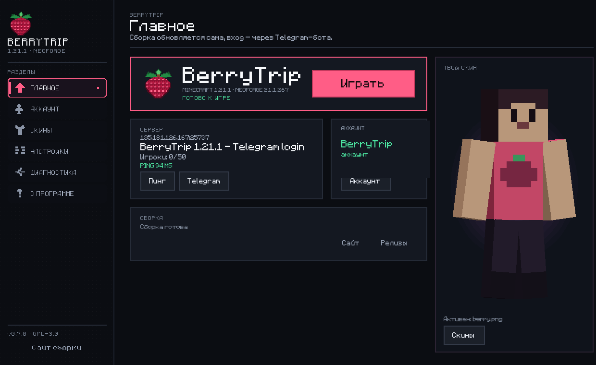
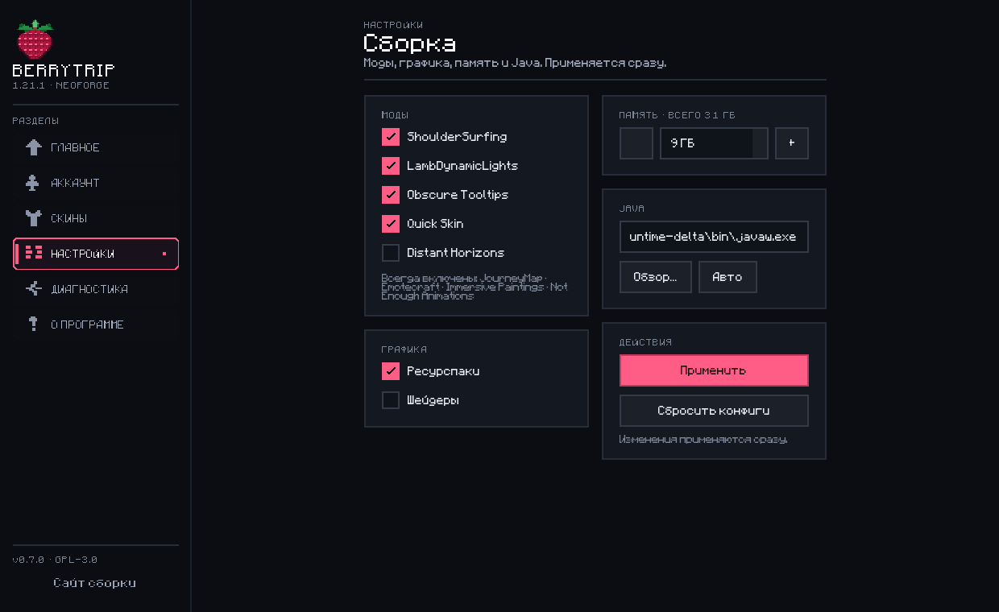

BerryTrip
BerryTripПроверяю сервер…
BerryTrip
Лаунчер и сервер
Minecraft 1.21.1
Один установщик вместо Prism, Java и ручной сборки. Скачай, запусти и нажми «Играть» — лаунчер сам скачает Java, моды и подключение к серверу.
Windows 10/11 x64 · ≈ 14 МБ · v0.7.10 · обновляется сам

BERRYTRIP LAUNCHER 0.7Три шага
Никаких «сначала поставь Prism». Лаунчер самостоятельный: внутри уже есть Prism-ядро, Qt и загрузчик Java.
-
1
Скачай установщик
Один
К скачиванию →BerryTrip-Setup.exeдля Windows. Установка в%LOCALAPPDATA%, права администратора не нужны. -
2
Запусти и нажми «Играть»
Лаунчер сам скачает Java, сборку, моды и ресурсы. Первый запуск занимает пару минут, дальше — только обновления.
Нужен ли Prism? → -
3
Войди через Telegram
Вкладка «Аккаунт» → ник → «Войти» → Start в @killberriesbot. Вайтлист и вход произойдут сами.
Открыть бота →
berrytrip.exe. Старый BerryUp, который искал установленный Prism, можно удалить.Что уже внутри
Не просто запуск игры, а весь путь от чистой Windows до сервера BerryTrip.
3D-скин на главной
Модель Quick Skin с плащом, слоями и живым вращением мышью. Скин и плащ ставятся в библиотеку мода прямо из лаунчера.
Вход через Telegram
Одна кнопка, никакого Microsoft-аккаунта и кодов. Бот привязывает ник к Telegram и сразу добавляет его в вайтлист.
Сборка по SHA-256
Каждый файл сверяется с манифестом. Скачиваются только изменения, повреждённые и лишние файлы не остаются.
Автообновление
Лаунчер сам проверяет GitHub при запуске, скачивает установщик, проверяет SHA-256 и перезапускается уже на новой версии.
Настройки и диагностика
Память, Java, моды, ресурспаки и шейдеры — в одном окне. Диагностика показывает Java, моды, память и свободное место.
Сервер и статус
Ping, онлайн, MOTD и быстрый вход на 135.181.126.167:25737. Сервер и сборка обновляются отдельно от лаунчера.
Всё в одном пиксельном окне
Главная, аккаунт, скины, настройки, диагностика и «О программе» — без менеджера инстансов, лишних кнопок и английского интерфейса.
- 3D-превью скина и плаща
- память и Java в два клика
- отчёт для помощи в чате
- обновление лаунчера и сборки

Скачать
Одна актуальная версия. Ссылки и SHA-256 подтягиваются из последнего GitHub-релиза.
BerryTrip Launcher 0.7.10
SHA-256:уточняется…
Установщик подписан сертификатом BerryTrip. Если Windows покажет SmartScreen, нажми «Подробнее» → «Выполнить в любом случае»; SHA-256 выше можно сверить с GitHub.
Правила
Коротко: играй честно и не мешай другим.
- Без читов, автокликера и X-ray. Моды из сборки — можно.
- Не гриферь и не ломай чужие постройки.
- PvP — только по согласию обеих сторон.
- Один ник — один человек. Вход привязан к Telegram, передавать его нельзя.
- Обход входа или игры с чужого аккаунта — бан без разговоров.
- Вопросы и заявки — в Telegram-бот.
Вопросы
Коротко о том, что обычно спрашивают перед первым запуском.
Нужен ли установленный Prism Launcher?
Нет. BerryTrip Launcher — самостоятельный форк Prism: весь код Prism, Qt-библиотеки и загрузчик Java уже внутри. Отдельный Prism, старый BerryUp и ручная установка модов не нужны. Лаунчер создаёт свой инстанс BerryTrip и сам поддерживает его в актуальном состоянии.
Нужно ли ставить Java?
Обычно нет. В лаунчере включён автоматический загрузчик Java: если подходящей JRE нет, он скачает её сам. Если Java уже стоит или ты хочешь указать свою, путь можно задать в «Настройках» → «Java».
SmartScreen или антивирус ругается на установщик
Установщик подписан сертификатом BerryTrip, но это не сертификат Microsoft, поэтому SmartScreen может показать предупреждение. Нажми «Подробнее» → «Выполнить в любом случае». SHA-256 на этой странице берётся из GitHub-релиза — сверь его, если сомневаешься. Исходники открыты: github.com/evilvalue/prism-berry.
Где лежат сохранения и настройки?
Инстанс: %APPDATA%\PrismLauncher\instances\BerryTrip. Миры — в minecraft\saves, настройки игры — в minecraft\options.txt и config. Обновления сборки не удаляют сохранения.
Куда ставится сам лаунчер?
По умолчанию в %LOCALAPPDATA%\Programs\BerryTrip. Удаление — через «Параметры → Приложения → BerryTrip Launcher» или uninstall.exe; сохранения и инстанс при этом остаются.
Как работают обновления?
При запуске лаунчер проверяет GitHub. Если есть новая версия, на главной появляется баннер: скачать, проверить SHA-256 и установить. Установщик запускается после закрытия лаунчера и сам открывает новую версию. Настройки, скины и сохранения не трогаются.
Автоустановка появилась в 0.7.1: с 0.6.1 или 0.7.0 нужно один раз обновить вручную, дальше обновления скачиваются и ставятся сами.
Бот не принимает ник из сообщения
Ник берётся из одноразовой ссылки, которую сервер выдаёт лаунчеру: вручную написать боту чужой ник нельзя. Открой «Аккаунт» → впиши ник → «Войти» и нажми Start в боте. Один Telegram может привязать только один ник.
Пишет «сессия истекла»
Токен входа живёт 30 дней. Нажми «Войти» ещё раз и Start в боте — лаунчер сохранит новый токен. Если игра уже открыта, перезапусти её после входа.
Скин и плащ: можно посмотреть заранее?
Да. На главной справа крутится 3D-модель, а во вкладке «Скины» можно выбрать PNG/GIF, примерить и применить. Файлы кладутся в библиотеку Quick Skin, игра видит их без перезапуска лаунчера.
Что делать со старым BerryUp?
Он больше не нужен. Закрой BerryUp, удали его папку %LOCALAPPDATA%\BerryUp и ярлыки. Инстанс BerryTrip и сохранения в Prism-папке останутся, новый лаунчер подхватит их.